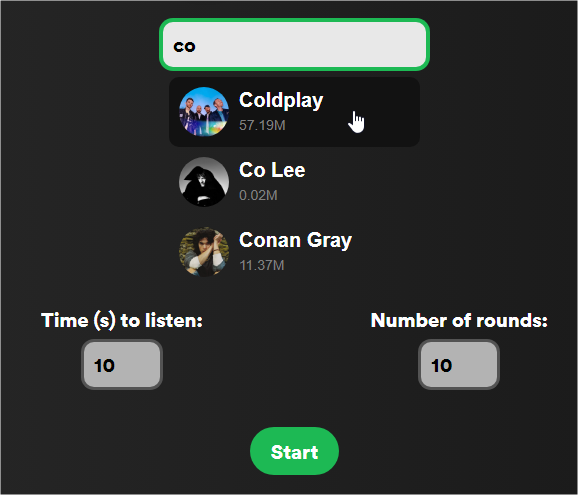
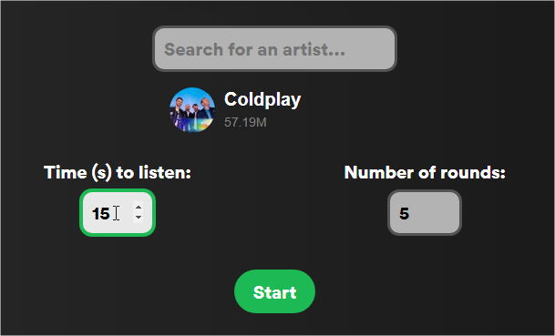
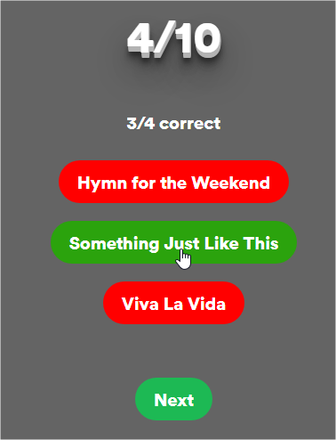
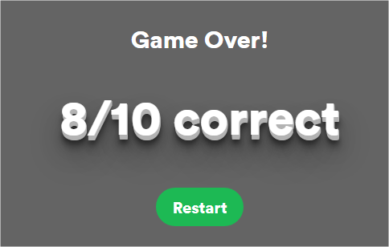

Song Master is a Spotify-based song guessing game. In this game, you listen to a short snippet from one of an artist's top tracks and try to guess the correct track title from three options. The game uses Spotify's API and Web Playback SDK to fetch and play track snippets, offering a fun and interactive challenge for music fans.
Getting Started
Open the Game: Launch the game in your web browser.
Search for an Artist:
Use the search bar at the top of the page to type in the name of an artist.
As you type, the game displays search results with artist images, names, and follower counts.
Click on the desired artist to select them.

Artist Search
Configure Game Settings:
Time (s) to Listen: Set how many seconds each track snippet should play. The default value is 10 seconds (allowed range: 1-30 seconds).
Number of Rounds: Choose the total number of rounds (guesses) for the game. The default is 10 rounds (allowed range: 1-30 rounds).

Game Settings
How to Play
Start the Game: After selecting an artist and configuring the settings, click the Start button. The game overlay will appear, displaying the game content.
Game Interface:
Round Information: The overlay shows the current round (e.g., "1/10") and your score (e.g., "0/0 correct").
Track Snippet: A random track snippet from the selected artist’s top tracks is played. The snippet starts at a random position in the track.
Answer Options: You are presented with three buttons, each displaying a track title. Click the button corresponding to the track you believe is playing.

Game In-Progress
Making a Guess:
If you select the correct track, your chosen button turns green while the other options turn red.
If your guess is incorrect, the correct answer will be highlighted in green and your selection will turn red.
After making a guess, the answer buttons are disabled and a Next button becomes available.
Proceeding Through Rounds: Click the Next button to move to the following round. This process repeats until you complete all the rounds set at the beginning.
Game Over: After completing the final round, the game over screen is displayed with your final score and a Restart button to play again.

Game Over
Exiting and Restarting the Game
Back Button: At any point during the game, click the Back button (located in the top left corner) to exit the game overlay and pause playback.
Restart Option: After the game ends, click the Restart button on the game over screen to reset your score and play again.
Technical Details
Spotify Integration: The game fetches an access token from a backend service to interact with Spotify’s API. It uses the Spotify Web Playback SDK to stream track snippets directly in the browser.
Randomized Snippet Playback: Each track snippet starts at a random position within the song, ensuring a unique challenge every round.
Responsive Interface: The design is responsive and works well across different devices and screen sizes.
Troubleshooting
Search Problems: If no artist results appear, double-check your internet connection or try a different search term.
Other Bugs: If you encounter any unexpected behavior, consider checking your browser’s console for error messages or contact support.
Conclusion
Enjoy playing Song Master and put your knowledge of your favorite artists to the test! Whether you're a casual listener or a dedicated fan, this game provides an exciting and challenging musical experience.